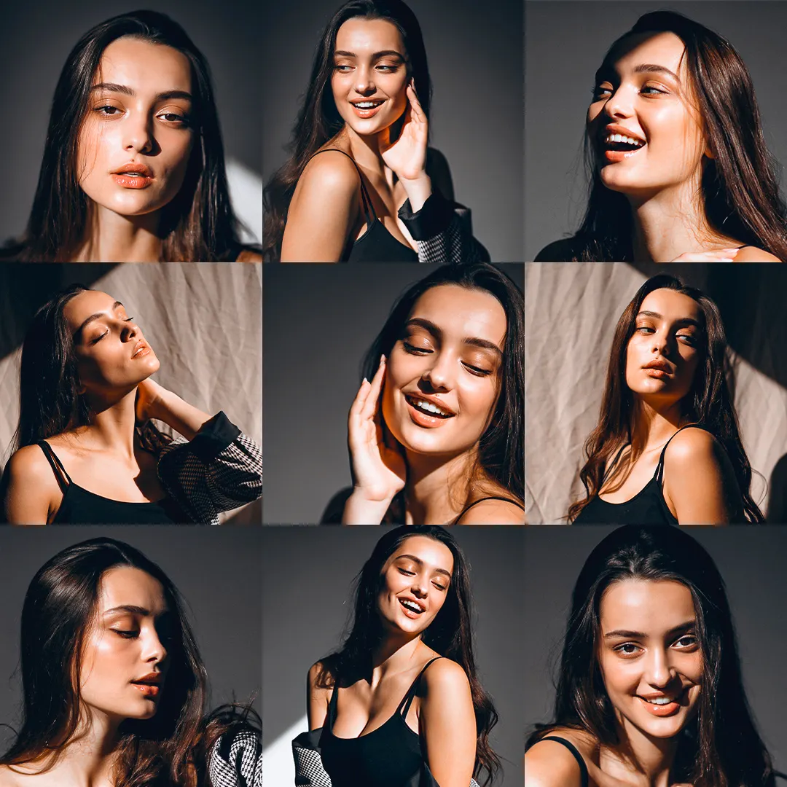
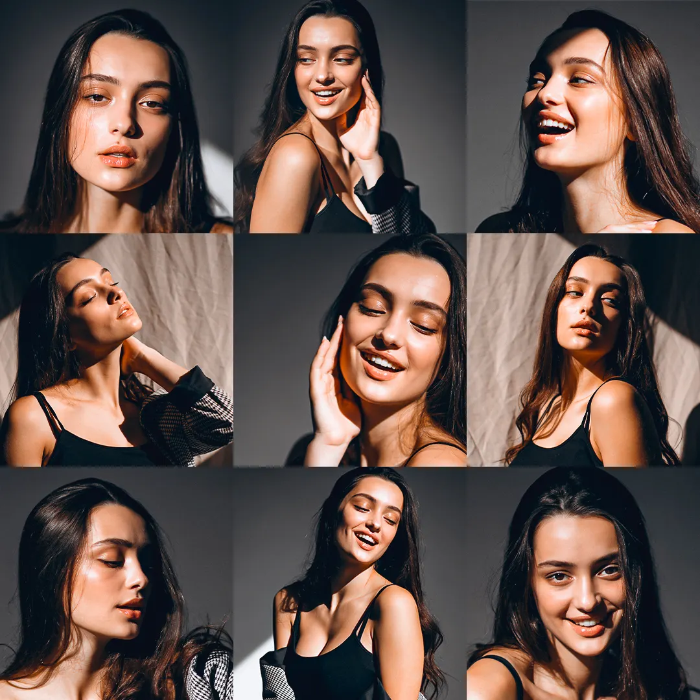
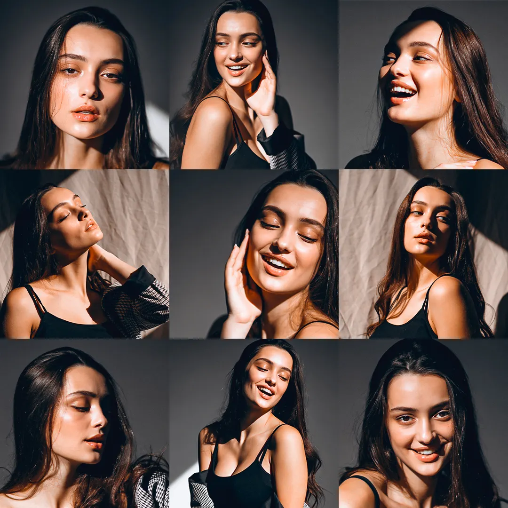

Skin Retouch
24 presets
Uma coleção de presets criada para valorizar a naturalidade da pele, seja em tons claros ou escuros.
 


Nossos presets foram feitos para você editar suas fotos em segundos, direto do seu celular, mesmo sem nenhuma experiência em edição.
Quero transformar minhas fotos agora
Os Presets são edições profissionais prontas que você aplica em suas fotos direto do celular com apenas um toque.
Eles ajustam cores, luz e contraste automaticamente, deixando qualquer foto com aparência profissional em segundos, sem precisar saber nada de edição.
Para usar os presets, você só precisa instalar o aplicativo gratuito Lightroom Mobile, disponível para Android e iOS.
* Arraste a linha para comparar a transformação em tempo real


Com nossos presets, suas fotos ganham cor, presença e estilo em segundos.
24 presets
Uma coleção de presets criada para valorizar a naturalidade da pele, seja em tons claros ou escuros.

24 presets
Uma coleção de presets criada para valorizar a naturalidade da pele, seja em tons claros ou escuros.
24 presets
Uma coleção de presets criada para valorizar a naturalidade da pele, seja em tons claros ou escuros.
24 presets
Uma coleção de presets criada para valorizar a naturalidade da pele, seja em tons claros ou escuros.
24 presets
Uma coleção de presets criada para valorizar a naturalidade da pele, seja em tons claros ou escuros.
24 presets
Uma coleção de presets criada para valorizar a naturalidade da pele, seja em tons claros ou escuros.
24 presets
Uma coleção de presets criada para valorizar a naturalidade da pele, seja em tons claros ou escuros.
Ao garantir seus presets hoje, você recebe dois bônus exclusivos.

Nunca usou presets antes? Não tem problema. Você vai receber um tutorial prático mostrando exatamente como instalar e usar seus novos presets no seu celular.
Com esse tutorial, você vai aprender a remover pessoas e objetos indesejadas das suas fotos em poucos toques. Ideal para deixar suas imagens mais limpas, profissionais e focadas.

Transforme seu perfil em uma vitrine irresistível que atrai seguidores e valoriza suas fotos. Aprenda a organizar o feed, usar cores certas e criar uma estética de influenciador.
De $ 99,00 por apenas:
$ 9,97
* pagamento único
Acesso imediato após a confirmação do pagamento

Não. Nossos presets foram feitos para qualquer pessoa, mesmo que nunca tenha editado uma foto. É só instalar e aplicar com 1 clique.
Sim. Você só precisa do aplicativo gratuito Lightroom Mobile, disponível para Android e iPhone.
Logo após o pagamento ser aprovado, você recebe um e-mail com link para download imediato e acesso vitalício.
Você terá acesso ao nosso Guia Rápido de Instalação e ao Suporte Expresso, que responde qualquer dúvida rapidamente.
Não. O acesso é vitalício. Você pode baixar quantas vezes quiser e usar para sempre.
Você tem 7 dias de garantia incondicional. Se não amar os resultados, devolvemos 100% do valor pago.